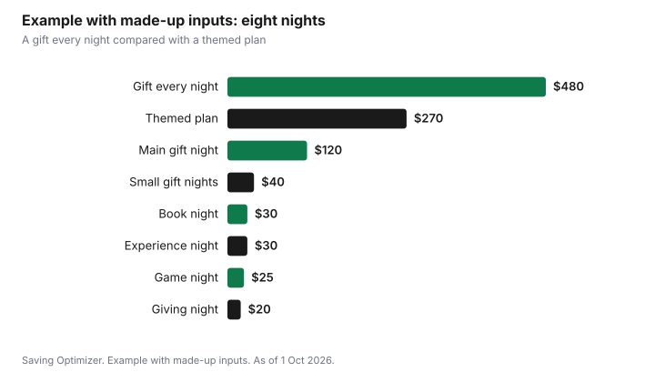

Events · Canada
Hanukkah on a Budget in Canada: Eight Nights of Gifts Without Overspending
The simplest way to keep Hanukkah affordable is to set one total for all eight nights before you buy anything, and then give each night a theme instead of a full gift. One night can carry the main gift, a few nights can bring small gifts, and the rest can be an experience night, a book night, a family game night or a giving night. Food for gatherings and candles go in their own lines. In 2026, Hanukkah begins at sunset on Friday 4 December and ends at nightfall on Saturday 12 December, according to the Chabad holiday calendar, so it overlaps with Black Friday flyers and early holiday sales. Use those sales for items already on your list.
Key takeaways
- Hanukkah 2026: begins at sunset Friday 4 December, ends at nightfall Saturday 12 December (Chabad calendar).
- Set one total for eight nights, then plan by night, not by child.
- Themed nights cut costs: one main gift, small gifts, an experience, books, a game night and a giving night.
- Budget food for gatherings separately; latkes and doughnuts for a crowd add up.
- Buy candles once for the season and reuse the menorah and decor.
- Example with made-up inputs: eight full gifts for two children at $480 become a $260 plan.
Setting a budget across eight nights
Eight nights can feel like eight separate holidays. Families who keep the cost down usually think about the whole festival as one event with one total. Start with the money available, out of savings or December income, and subtract the food and candles you will need. What is left is the gift total, which you then spread across the nights.
| Line | What it covers | Your amount |
|---|---|---|
| Gifts | Gifts for children and adults across eight nights | |
| Food | Latkes, doughnuts, a family dinner, a party | |
| Candles and decor | Candles for eight nights, decor, dreidels, gelt | |
| Giving | Donations as a family | |
| Buffer | Extra guests or a forgotten gift |
If you also give gifts at other holidays in the family, plan them together. The December spending plan shows how to fit everything in one month's money.
Small-gift and experience nights
A theme for each night keeps the festival special without eight large gifts. Here is one plan; change it to suit your family.
| Night | Theme | Cost level |
|---|---|---|
| 1 | Main gift | Highest |
| 2 | Book night | Low |
| 3 | Family game or craft night | Low |
| 4 | Small gift | Low |
| 5 | Experience night: skating, a movie at home, baking together | Low to medium |
| 6 | Small gift | Low |
| 7 | Giving night: choose a charity together | Your choice |
| 8 | Something homemade or a letter | Very low |
Experience nights often become the ones children remember. A public skating session, a library visit, a home movie with popcorn, or baking sufganiyot together costs less than a toy and fills an evening. For ideas on gifts that are tickets, classes or memberships, see experience gifts.
Several children
Families with more than one child can plan some shared nights, such as a board game the whole family uses, and some individual nights. Keep a simple chart so each child gets a similar number of gifts and a similar total, and so grandparents know which nights are covered. If relatives want to give, assign them a night.
Food for gatherings
Hanukkah food is fried and festive, and the cost grows with the guest list. Decide how many gatherings you will host and how many people each will have. A latke party can be a potluck where you make the latkes and guests bring toppings, salads or dessert. Buying potatoes, onions and oil in larger quantities for several nights is usually cheaper than buying for each night separately; check unit prices in your store's flyer.
- Set the number of gatherings and guests early.
- Make one big latke night and keep the other nights simple.
- Ask guests to bring sour cream, applesauce or dessert.
- Fry and freeze latkes ahead if your schedule is tight; reheat in the oven.
- Put leftovers in the fridge within two hours. Health Canada says to throw away cooked food left at room temperature for longer than that.
The holiday party hosting budget has a per-guest worksheet for a larger party.
Candles and decor
A menorah is used year after year, so the recurring cost is candles. Count the candles you need for all eight nights for each menorah lit in the home and buy one box for the season. Store decor, dreidels and table items in one labelled box after the festival. If you need to replace decor, buying after the holiday, when stores sometimes discount seasonal items, can work for next year.
Lit candles need attention: keep the menorah on a stable, heat-safe surface away from curtains, out of reach of children and pets, and do not leave it unattended.
Charitable giving traditions
Many families include giving during Hanukkah. A giving night, where children help choose a charity and decide an amount, can be part of the festival rather than an extra cost. Set the amount as a line in the budget. If you want a tax receipt, give to a registered charity and ask for an official receipt; the guide to donation tax credits explains receipts, pooling with a spouse and the 31 December deadline.
Example with made-up inputs: two children, eight nights
These numbers are an example with made-up inputs. They are not store prices. A family with two children first imagines a $30 gift for each child every night: 8 nights × 2 children × $30 = $480. They switch to a themed plan. Night 1 brings a $60 main gift for each child ($120). Two small-gift nights cost $10 per child per night ($40). Book night costs $15 per child ($30). The experience night, a public skate and hot chocolate, costs $30 for the family. Game night is a $25 board game for everyone. The homemade night costs about $5. The giving night is $10 per child chosen by the children ($20, in its own giving line). Gifts and activities total $250; with giving, $270, and food and candles stay in their own lines.
| Night | Plan | Cost |
|---|---|---|
| 1 | Main gift, $60 each | $120 |
| 2 and 4 | Small gifts, $10 each per night | $40 |
| 3 | Board game for the family | $25 |
| 5 | Book night, $15 each | $30 |
| 6 | Experience: skating and hot chocolate | $30 |
| 7 | Giving night | $20 |
| 8 | Homemade gift or letter | $5 |
| Total | Themed plan | $270 |
| Compare | $30 each child each night | $480 |

A Hanukkah plan
- In November, set the total and split it across gifts, food, candles and giving.
- Write the eight-night theme chart and share it with relatives who want to give.
- Buy candles and pantry items for the whole festival in one trip.
- Use Black Friday or other sales only for gifts already on the chart.
- Plan one main gathering and make it a potluck if possible.
- After the festival, pack the menorah and decor carefully and note what to replace.
Sources
- Chabad.org, Jewish holiday calendar, Chanukah 2026, as of 1 Oct 2026. Begins at sunset Friday 4 December 2026 and ends at nightfall Saturday 12 December 2026. Hebcal lists the same dates.
- Health Canada, Food safety tips for leftovers, canada.ca (archived copy captured 25 Aug 2026), as of 1 Oct 2026. Discard cooked food left at room temperature for more than two hours.
- Canada Revenue Agency, What to know before you give to a charity, canada.ca (archived copy), as of 1 Oct 2026. Official receipts from qualified donees.
- The family, nightly plan, totals, table and chart are an example with made-up inputs.
Frequently asked questions
When is Hanukkah in 2026?
According to the Chabad holiday calendar, Hanukkah 2026 begins at sunset on Friday 4 December and ends at nightfall on Saturday 12 December.
Do you have to give a gift every night of Hanukkah?
No. Many families give a theme to each night, such as one main gift, small gifts, a book night, an experience night and a giving night, which keeps the festival special at a lower cost.
How much should I budget for Hanukkah?
There is no set amount. Start with the money you have, set aside food, candles and giving, and spread the rest across the eight nights with a theme chart.
How can I save on a latke party?
Make it a potluck where you make the latkes and guests bring toppings, salads or dessert, buy staples for all eight nights at once, and refrigerate leftovers within two hours.
Can I get a tax receipt for Hanukkah donations?
Yes, if you give to a registered charity or other qualified donee and it issues an official receipt. The gift must be made by 31 December to count for that tax year.
Researched and drafted with AI assistance and fact-checked against official Canadian sources. How we create content.
Disclosure: Saving Optimizer may earn a commission if a partner link is added later, such as a gift, book or cash-back offer type. No partnership is claimed on this page, and no store or brand is ranked. Education only.